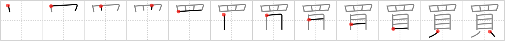

買
← →
buy

Reading:
On-Yomi: バイ — Kun-Yomi: か.う
Heisig story:
Eye . . . shellfish.
Koohii stories:
1) [bigspenderJ] 21-3-2007(194): When something catches my eye, I take out a few clams and buy before anybody else does.
2) [icamonkey] 28-8-2008(86): Rules to Buying: 1. You've had your eye on it for a while. 2. You have enough shells to afford it.
3) [Copycatken] 6-7-2006(20): If I have my eye on something, I'll shell out the shells to buy it.
4) [shibuyashoeya] 26-1-2011(15): Keep an eye on your money. Watch what you buy!
5) [fuaburisu] 10-10-2005(11): Our freakish shellfish with a single, gigantic eye (see FRAME 54) buys himself another smaller eye that he places above his big eye. Now he looks even more freakish.